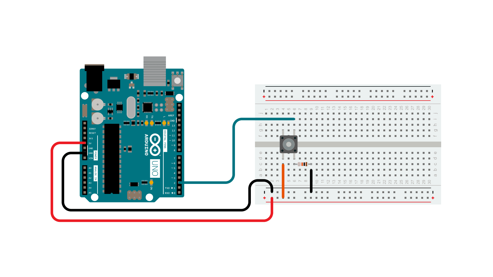
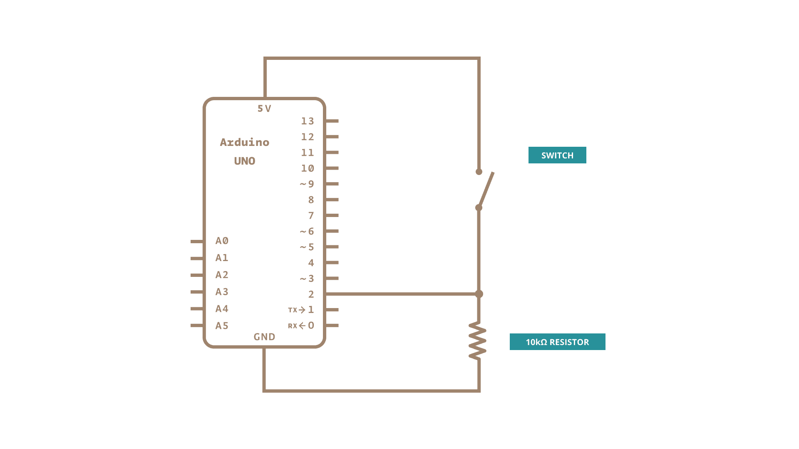
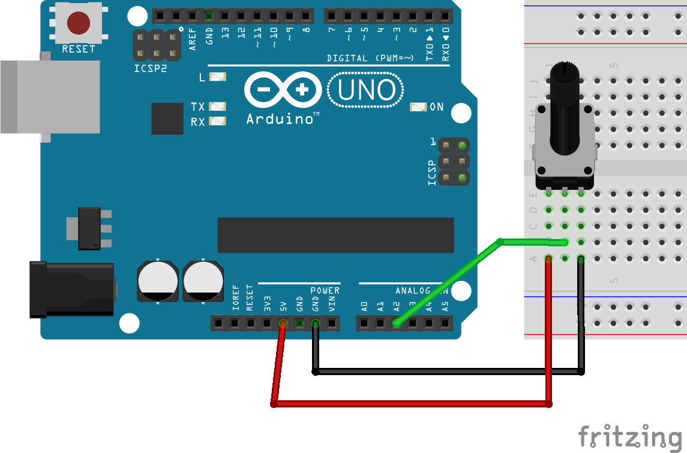

An Arduino is an open-source microcontroller that allows users to create interactive electronic projects. It is widely used in the prototyping world due to its versatility, ease of use, and ability to control hardware components like sensors, LEDs, motors, and more. We are using the Arduino UNO WiFi Rev 4, which comes with built-in WiFi capabilities, making it ideal for IoT projects where connectivity is key. Compared to earlier versions, this model offers a more powerful processor and enhanced connectivity options.
void setup(): This function runs once when the Arduino is powered on or reset. It is used to initialize settings, such as setting pin modes.void loop(): This function runs continuously after setup() has finished. It contains the main logic of your program that repeats indefinitely.void setup() {
// Initialization code here
pinMode(LED_BUILTIN, OUTPUT); // Set built-in LED as an output
}
void loop() {
// Main code here
digitalWrite(LED_BUILTIN, HIGH); // Turn the LED on
delay(1000); // Wait for 1 second
digitalWrite(LED_BUILTIN, LOW); // Turn the LED off
delay(1000); // Wait for 1 second
}One of the simplest projects you can create with an Arduino is flashing an LED on and off. This section is split into three parts to explore different ways of controlling LEDs.
We will use the built-in LED on the Arduino board, which is usually connected to pin 13. This example introduces digital outputs and how to upload the code to your Arduino board.
void setup() {
pinMode(LED_BUILTIN, OUTPUT); // Set built-in LED as an output
}
void loop() {
digitalWrite(LED_BUILTIN, HIGH); // Turn the LED on
delay(1000); // Wait for a second
digitalWrite(LED_BUILTIN, LOW); // Turn the LED off
delay(1000); // Wait for a second
}To upload this code, connect your Arduino to your computer via USB, select the correct board and port in the Arduino IDE, and click the upload button.
The Arduino UNO WiFi Rev 4 includes a built-in LED matrix consisting of 96 LEDs. In this example, we will control one of these LEDs specifically. To manipulate the LED matrix, we use the Arduino_LED_Matrix library, and we need to include the correct header file Arduino_LED_Matrix.h. Ensure that you have the Arduino_LED_Matrix library properly installed. The code below shows how to achieve this:
#include "Arduino_LED_Matrix.h"
ArduinoLEDMatrix matrix;
void setup() {
matrix.begin();
}
uint8_t frame[8][12] = {
{ 0, 0, 0, 0, 0, 0, 0, 0, 0, 0, 0, 0 },
{ 0, 0, 0, 0, 0, 0, 0, 0, 0, 0, 0, 0 },
{ 0, 0, 0, 0, 0, 0, 0, 0, 0, 0, 0, 0 },
{ 0, 0, 0, 0, 0, 0, 0, 0, 0, 0, 0, 0 },
{ 0, 0, 0, 0, 0, 0, 0, 0, 0, 0, 0, 0 },
{ 0, 0, 0, 0, 0, 0, 0, 0, 0, 0, 0, 0 },
{ 0, 0, 0, 0, 0, 0, 0, 0, 0, 0, 0, 0 },
{ 0, 0, 0, 0, 0, 0, 0, 0, 0, 0, 0, 0 }
};
void loop() {
frame[2][2] = 1;
matrix.renderBitmap(frame, 8, 12);
delay(1000);
frame[2][2] = 0;
matrix.renderBitmap(frame, 8, 12);
delay(1000);
}Now, we will connect an external LED to a breadboard and flash it. Connect one end of the LED to a digital pin (e.g., pin 7) and the other end to the ground through a resistor (to limit current and protect the LED).
const int ledPin = 13; // External LED connected to pin 13
void setup() {
pinMode(ledPin, OUTPUT); // Set external LED as an output
}
void loop() {
digitalWrite(ledPin, HIGH); // Turn the LED on
delay(1000); // Wait for 1 second
digitalWrite(ledPin, LOW); // Turn the LED off
delay(1000); // Wait for 1 second
}Next, we will add a button to control the LED. When pressed, the button will toggle the LED on and off. This example helps demonstrate how to read digital inputs and control an output based on user interaction.
const int buttonPin = 2;
const int ledPin = LED_BUILTIN;
int buttonState = 0;
void setup() {
pinMode(buttonPin, INPUT); // Set button pin as input
pinMode(ledPin, OUTPUT); // Set LED as output
}
void loop() {
buttonState = digitalRead(buttonPin); // Read the state of the button
if (buttonState == HIGH) { // If button is pressed
digitalWrite(ledPin, HIGH);
} else {
digitalWrite(ledPin, LOW);
}
}In order for the button to read properly you will need to use a resistor like so:

Which from a schematic stand point should look like this:

We can also read analog values using the Arduino. In this example, we'll read the value from a potentiometer and print it to the serial monitor. This is useful to understand how to handle analog inputs and see the output in real-time.
const int potPin = A2;
void setup() {
Serial.begin(9600); // Start serial communication at 9600 baud
}
void loop() {
int potValue = analogRead(potPin); // Read the value from the potentiometer
Serial.println(potValue); // Print the value to the serial monitor
delay(100); // Wait for 100ms
}To see the output, click the serial monitor button in the Arduino IDE after uploading the code.

In this section, we will implement a WebSocket-based communication system involving three components:
This architecture allows the Arduino to send sensor data and receive control commands through the Node.js server, enabling real-time interaction with the React app.
First lets create a new folder the websocket server called WSServer.
In this folder create a file called server.js and copy paste the following information:
const ip = require('ip');
const WebSocket = require('ws');
const port = 8080;
const wss = new WebSocket.Server({ port });
const clients = {};
wss.on('error', function error(err) {
console.log('Error: ' + err.code);
});
wss.on('connection', function connection(ws, req) {
console.log('connected');
let clientID = req.headers['sec-websocket-key'];
clients[clientID] = ws;
ws.on('error', function (err) {
console.log('Found error: ' + err);
});
ws.on('message', function incoming(message) {
const decodedMessage = message.toString();
console.log('received:', decodedMessage, 'from', clientID, Object.keys(clients));
wss.clients.forEach((client) => {
if (client !== ws && client.readyState === WebSocket.OPEN) {
client.send(`${decodedMessage}`);
}
});
if (decodedMessage === 'Hello WebSocket!') {
console.log('received Hello WebSocket!');
} else if (decodedMessage === 'RESET_CELESTIA') {
console.log('received RESET_CELESTIA');
}
});
ws.on('close', function () {
console.log(new Date() + ' Peer ' + clientID + ' disconnected.');
delete clients[clientID];
});
});
console.log(ip.address() + ' listening on port ', port);Then in terminal type npm init, go through all the steps until you are out of it.
Then run: npm install ws ip
And finally run npm start which should start your server.
Now, we will add WebSocket integration to the React app. We can create a new project for the react app with Vite:
npm create vite@latest react_app_ws -- --template react
cd react_app_ws
npm installChoose the plain react template, not react-ts. We will use the react-use-websocket library to handle WebSocket connections. Install it using npm:
npm install react-use-websocketHere is the updated React code with WebSocket functionality:
import React, { useState, useEffect } from 'react';
import './App.css';
import useWebSocket, { ReadyState } from 'react-use-websocket';
function App() {
const socketUrl = 'ws://localhost:8080';
const customID = 'React-APP';
const [potentiometerValue, setPotentiometerValue] = useState(0);
const { sendMessage, lastMessage, readyState } = useWebSocket(socketUrl, {
onOpen: () => {
sendMessage(JSON.stringify({ type: 'setID', id: customID }));
},
});
const connectionStatus = {
[ReadyState.CONNECTING]: 'Connecting',
[ReadyState.OPEN]: 'Open',
[ReadyState.CLOSING]: 'Closing',
[ReadyState.CLOSED]: 'Closed',
[ReadyState.UNINSTANTIATED]: 'Uninstantiated',
}[readyState];
useEffect(() => {
if (lastMessage !== null) {
try {
const data = JSON.parse(lastMessage.data);
if (data.potentiometer !== undefined) {
setPotentiometerValue(data.potentiometer);
}
} catch (error) {
console.error('Error parsing WebSocket message:', error);
}
}
}, [lastMessage]);
return (
<div>
<header>
<div>
<h1>WebSocket Example</h1>
<button onClick={() => sendMessage('Hello WebSocket!')}>
Send Message
</button>
<button onClick={() => sendMessage('ADD_1_LED')}>Add 1 LED</button>
<button onClick={() => sendMessage('REMOVE_1_LED')}>
Remove 1 LED
</button>
<p>
Last message: {lastMessage ? lastMessage.data : 'No message yet'}
</p>
<p>Connection status: {connectionStatus}</p>
<p>Potentiometer Value: {potentiometerValue}</p>
</div>
</header>
</div>
);
}
export default App;Finally, here is the Arduino code to integrate with the WebSocket server. Ensure the necessary libraries are installed, including ArduinoHttpClient, WiFiS3:
#include <ArduinoHttpClient.h>
#include <WiFiS3.h>
#include "Arduino_LED_Matrix.h"
#include "arduino_secrets.h"
ArduinoLEDMatrix matrix;
uint8_t frame[8][12] = {0};
int ledCount = 0;
const int maxLEDs = 8 * 12;
/////// Wifi Settings ///////
char ssid[] = SECRET_SSID;
char pass[] = SECRET_PASS;
char serverAddress[] = "10.0.6.11"; // update with your server's IP Address
int port = 8080;
WiFiClient wifi;
WebSocketClient client = WebSocketClient(wifi, serverAddress, port);
int status = WL_IDLE_STATUS;
const int potentiometerPin = A0;
int potentiometerValue = 0;
unsigned long lastSentTime = 0;
void setup() {
Serial.begin(9600);
matrix.begin();
while (status != WL_CONNECTED) {
Serial.print("Attempting to connect to Network named: ");
Serial.println(ssid);
status = WiFi.begin(ssid, pass);
delay(1000);
}
Serial.print("Connected to WiFi, IP Address: ");
Serial.println(WiFi.localIP());
client.begin();
}
void loop() {
if (client.connected()) {
int messageSize = client.parseMessage();
String socketString = client.readString();
if (messageSize > 0) {
Serial.println("Received a message:");
Serial.println(socketString);
if (socketString == "ADD_1_LED") {
addLED();
} else if (socketString == "REMOVE_1_LED") {
removeLED();
}
}
} else {
Serial.println("Reconnecting WebSocket client...");
client.begin();
}
updateMatrixDisplay();
unsigned long currentTime = millis();
if (currentTime - lastSentTime > 500) {
potentiometerValue = analogRead(potentiometerPin);
sendPotentiometerData(potentiometerValue);
lastSentTime = currentTime;
}
delay(10);
}
void addLED() {
if (ledCount < maxLEDs) {
ledCount++;
Serial.print("LED Count Increased: ");
Serial.println(ledCount);
}
}
void removeLED() {
if (ledCount > 0) {
ledCount--;
Serial.print("LED Count Decreased: ");
Serial.println(ledCount);
}
}
void updateMatrixDisplay() {
memset(frame, 0, sizeof(frame));
for (int i = 0; i < ledCount; i++) {
int row = i / 12;
int col = i % 12;
frame[row][col] = 1;
}
matrix.renderBitmap(frame, 8, 12);
}
void sendPotentiometerData(int value) {
String message = "{\"potentiometer\": " + String(value) + "}";
client.beginMessage(TYPE_TEXT);
client.print(message);
client.endMessage();
Serial.print("Sent potentiometer data: ");
Serial.println(message);
}This implementation allows the React app to act as a server and communicate with the Arduino through WebSockets, enabling you to handle incoming messages and execute specific actions in your application.
In the React app, you can use the ws library to establish a WebSocket server that listens to incoming data from the Arduino. If there is a need for a Node.js server to facilitate communication, let me know, and I'll provide guidance on setting it up.
In this lesson, we introduced the Arduino UNO WiFi Rev 4 and explored basic programming concepts, including using the Arduino IDE, flashing an LED, controlling an LED with a button, reading analog values from a potentiometer, and setting up a WebSocket connection for real-time communication. By the end of this lesson, you should have a good understanding of how to work with both digital and analog components in Arduino and integrate your projects with a web application.